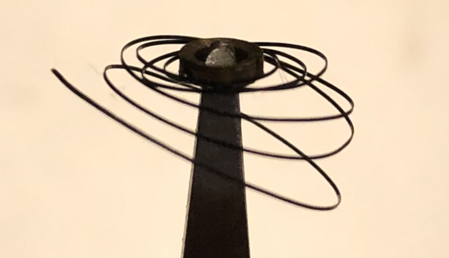

1820 Verge Watch Repair
I recently repaired this english verge watch c1800. Like most watches of its age it had a laundry list of problems:
- The click in the fusee was worn to the extent that it slipped, causing the cain to come of and quite possibly fly around the watch.
- The screw securing the balance cock was missing, the balance was loose in the case. Presumably someone had been in the watch before me and lost it.
- The balance staff was bent, see above.
- The hairspring was very badly bent, see above.
- One of the case hinges had a broken pin, a corresponding dent in the back of the case suggests it was dropped.
- A lot of the steel parts had significant rust, including the fusee chain.
The repair is detailed below:
The Click
The hardest part of the repair was making a new click. The worn click was no more than 2mm long in any dimension and made of 0.5mm thick spring steel with a 0.55mm pin protruding from one side. I started with a small piece of 0.6mm spring steel which I drilled a 0.5mm hole in.
- Made a notch for the click spring. The click spring had been bent inwards by a previous repairer and I didn't want to bend it back in case it broke by fatigue*.
- Added a second tooth, totally unnecessary but there was space, it should last longer and it makes it obvious that its not an original part (I wanted it to be clear to anyone taking apart this watch in future which parts are original and which are replacements).
- Increased the length of the 'heel' because there was space.
After shaping the part I enlarged the hole with a broach until a taper pin in it was a good sliding fit with the hole in the fusee.
I filed the pin flush and polished the faces of the teeth with a very fine oilstone. Here is the new click installed with my thumbnail for scale.
The Case Hinge
One half of the broken hinge pin was easy to drive out with a punch but the other half was stuck fast so I dissolved it in alum. I made a replacement pin from short length of spring steel wire shaped into a taper using a file.
The Rest
Everything else was pretty standard watch overhauling and is not that interesting. I have attached a picture of the hairspring before being straightened out just to show how bad it was; it took several hours to get into a useable shape. It is beyond me why anyone would leave the balance cock rattling around in a watch.
The watch now runs although it is currently gaining 10min/hr, probably due to wear on the crown wheel and palates. It could be made to run more accurately but it would require more alteration than I would like to make to a 200 year old watch.
February 2024